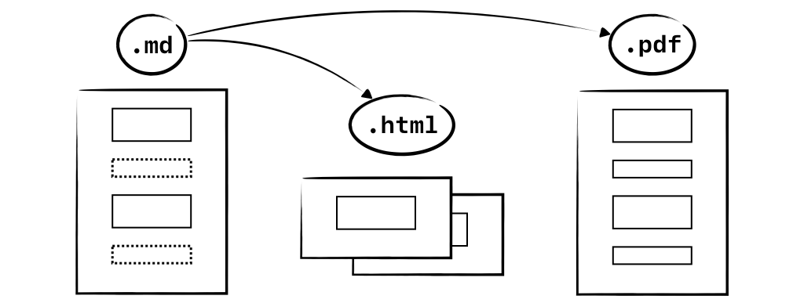

Une présentation scientifique doit se penser en termes de raison graphique, à contre-courant de la culture présentationnelle dominante façonnée par PowerPoint. Ne pas le faire, c’est saboter sa propre énonciation.
Frommer, F. (2010). La pensée Powerpoint : enquête sur ce logiciel qui rend stupide. Paris : La Découverte.
Robles-Anderson, E., & Svensson, P. (2016). « One Damn Slide After Another »: PowerPoint at Every Occasion for Speech. Computational Culture, (5).
Tufte, E. R. (2003). The Cognitive Style of PowerPoint: Pitching Out Corrupts Within. Cheshire : Graphics Press.
Deux points de vigilance
La liste à puces est souvent une béquille creuse qui tend à effacer les liens entre les étapes d’un raisonnement.
Pour représenter efficacement de l’information, il faut acquérir des notions de composition, d’édition, de design (hiérarchie, blanc, densité, résolution, etc.) sous peine de contre-productivité fatale (« Death by PowerPoint »).
C’est là que la courbe d’apprentissage est la plus pentue, et le bénéfice intellectuel le plus grand.
Desiderata
Pérennité : travailler avec un format léger, ouvert, facile à lire et à écrire.
Efficacité : automatiser, éditer précisément, reproduire rapidement et sûrement.
Fonctionnalité : bénéficier des innovations du web – mise en page adaptative, défilement, transclusion, etc.
Liberté : accroître son agilité informatique, choisir ses dépendances logicielles en toute conscience.
Solution proposée
Écriture en Markdown (avec les ajouts de Pandoc).
Mise en forme via CSS.
Conversion en HTML (avec Reveal.js) via Pandoc.
Composants du système
Markdown
Markdown est un langage de balisage léger, inventé pour écrire plus facilement en HTML. Volontairement basique, sa syntaxe contient :
des éléments en ligne comme emphase simple, emphase forte, lien, code ;
des éléments en bloc comme liste, citation, code, etc.
CSS
CSS est le langage de mise en forme du web. C’est un outil simple mais puissant. Son principal défaut est indirect : les navigateurs n’appliquent pas toujours toutes les fonctionnalités CSS, ni de manière identique.
Reveal est une collection de fichiers CSS et Javascript qui permettent de représenter un fichier HTML sous forme de présentation interactive.
Ceci permet de combiner les fonctionnalités classiques des logiciels de présentation (transitions, affichage avec notes…) avec celles du web.
Un argument phare de la présentation en HTML est la transclusion : on peut y inclure presque n’importe quel contenu web via un cadre interactif (iframe).
Pandoc
Pandoc est un logiciel de conversion entre langages de balisage. On l’utilise ici pour transformer du Markdown en présentation HTML Reveal.
Pandoc permet de pousser très loin le compromis entre simplicité et fonctionnalité inhérent à Markdown grâce à des extensions de la syntaxe de base, ainsi que des options de paramétrage de Reveal.
Ajouts de Pandoc à Markdown
Des modifications ou extensions des éléments existants.
Des éléments nouveaux : maths, notes de bas de page, références bibliographiques, liste de définitions…
De la mise en forme : coloration syntaxique du code mais surtout une syntaxe raccourcie pour les div et span qui permet d’introduire de la mise en forme facilement.
Un exemple d’ajout, l’intégration d’une gestion automatisée des références bibliographiques :
« PowerPoint offre une vision simplifiée et fragmentée pour être accessible et reproductible ; il donne l’illusion de produire du spectaculaire pour séduire ; il est minimaliste pour esquiver la critique. » (Frommer, 2010, p. 252)
Paramétrage de Reveal via Pandoc
Dans le fichier : notes d’intervenant, attributs de slide.
À la conversion : numérotation des slides, visibilité des boutons, type de transition, thème graphique, etc.
Plutôt qu’exécuter Pandoc manuellement, mieux vaut écrire un script ou utiliser un logiciel. Exemple (macOS) :
outils système (Automator, AppleScript) ;
éditeur de texte généraliste scriptable (ex : BBEdit) ;
éditeur spécialisé bâti autour de Pandoc (ex : Zettlr).
Fabrication d’une présentation
Première slide
Le bloc de métadonnées en YAML au début du fichier Markdown permet de fournir les éléments de la première slide, qui est créée automatiquement. Il peut aussi contenir des options propres à Pandoc.
Slides
Un titre signale le début d’une nouvelle slide. Un seul niveau de titre dans tout le document crée une présentation linéaire ; utiliser deux niveaux différents crée une présentation en deux dimensions, avec un défilement horizontal et vertical.
Si on ne met que les croisillons, cela crée un élément titre mais sans contenu textuel, donc une nouvelle slide mais non titrée.
Contenu
Toute la syntaxe Markdown est utilisable. On peut également inclure du HTML pour certains éléments rares mais utiles (iframe, kbd, etc.).
Attributs de slide
# Titre {data-background-color="#000000"}
Ils viennent modifier le fond d’une slide en y affichant une couleur, image, vidéo ou iframe indiquée entre accolades.
L’iframe en fond est particulièrement intéressante pour montrer des ressources web en tirant parti de la totalité de l’écran (voir slide suivante).
Spans et divs
Pandoc propose une syntaxe raccourcie pour appliquer des attributs (classes et identifiants CSS) à certains éléments ou groupe d’éléments. Ceci crée des spans et des divs en HTML.
[texte]{attribut} {attribut}
::: {.attribut}
Contenu (texte, image, etc.)
:::
Exemple : css est en petites capitales car Pandoc rajoute la déclaration suivante pendant la conversion :
.smallcaps { font-variant: small-caps; }
Partant de ce principe, on peut introduire ses propres règles de mise en forme ou réutiliser un jeu de règles existantes.
Édition multicanal

Recommandations sur les images
Résolution élevée, grande taille et zoom Alt+clic
Juxtaposition horizontale
Juxtaposition verticale
Alignement d’images
Figures
Légende
Plusieurs figures
LégendeLégendeLégende
Légende sur le côté
Une figure contient une image (img) et une légende (figcaption) positionnée dessous. Pour tirer le meilleur parti des contraintes spatiales de l’écran, on peut vouloir modifier leur disposition, par exemple en mettant la légende sur le côté quand l’image s’y prête.